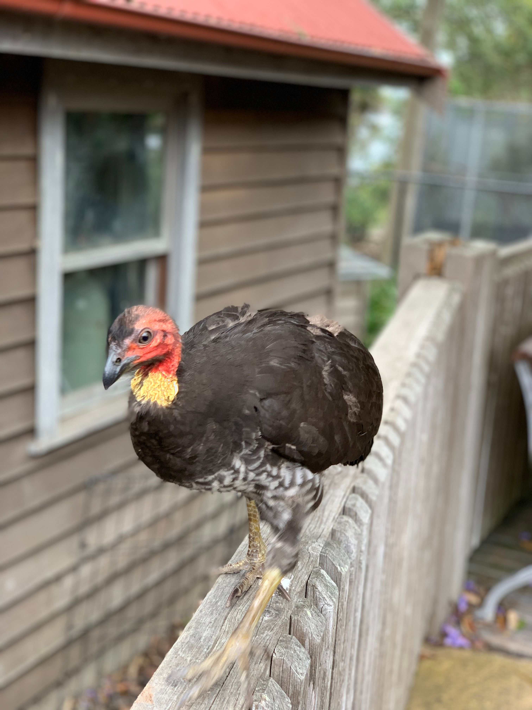

The Australian Brush-turkey is a large megapode with a mostly black body, a bare red head, a yellow throat wattle and a laterally flattened tail. Despite its name, it is not a true turkey. It belongs to the megapode family, a remarkable group of birds that incubate their eggs using heat generated by decomposing vegetation rather than sitting directly on the eggs. The male Australian Brush-turkey constructs a huge mound of leaves, soil and other organic material, sometimes several metres across. Females lay eggs in the mound, and the male monitors its temperature by adjusting the material. The chicks hatch fully feathered and can fly within hours.
Australian Brush-turkey is best separated from Malleefowl by looking at the overall shape and the strongest plumage pattern rather than one small mark. Compared with Malleefowl, it has a different combination of colour, proportions and typical behaviour, which becomes clearer when the whole bird is visible. Orange-footed Scrubfowl can also resemble it in some settings, but differences in bill shape, tail length, wing pattern, posture or habitat can help narrow the identification. Calls and behaviour are useful supporting clues when plumage is difficult to see, especially for birds that spend much of their time in dense vegetation. Using several features together is more reliable than identifying the bird from a single characteristic.
IOC World Bird List v15.2 — taxonomy and nomenclature, IUCN Red List of Threatened Species — global conservation status, BirdLife International — species distribution, ecology and conservation, eBird / Cornell Lab of Ornithology — identification and life-history information